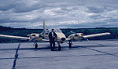

The BOREAS Information System
The BOREAS Information System
Airborne Fluxes and Meteorology (AFM)
AFM-14: Use of Biophysical Models and Satellite Remote Sensing to Quantify the Climate/Land Surface Interactions Over a Boreal Forest Biome
P.I.(s): Piers J. Sellers, Forrest G. Hall -- NASA/Goddard Space Flight Center
Objectives: Photosynthesis and transpiration models (e.g., SiB2 of Sellers et al., BGC of Running et al., the model of Bonan et al.), are being used in conjunction with remote sensing inputs of canopy process and biophysical parameters, landscape level disturbance and successional patterns to:
- simulate changes in energy and water exchange as a function of climate change scenarios
- simulate associated changes in growth rates and carbon storage associated with the successional stages in the boreal forest.
The linked stomatal resistance-photosynthesis SiB2 model is being used in the inverse-mode to calculate canopy photosynthetic capacities, bulk stomatal conductance etc., appropriate to each BOREAS flux site and compare the model predictions to tower measurements.
AFM-14 Pictures
 Piers Sellers and "Eyeball"
AFM-14 Data Sets
SiB2 Model
Get some AFM-14 data using FTP (BOREAS Investigators only, password required). [FTP Help]
Click on a team designation to go to that page.
AFM Overview || AFM-1 | AFM-2 | AFM-3 | AFM-4 | AFM-5 | AFM-6
AFM-7 | AFM-8 | AFM-9 | AFM-11 | AFM-12 | AFM-13 | AFM-14 | AFM-15
 Send a data request to the BOREAS Data Manager (BOREAS Investigators only)
Send a data request to the BOREAS Data Manager (BOREAS Investigators only)
E-Mail a comment on this page to the curator 
Send e-mail to Keith Kaminsky, the BORIS representative for the AFM group
Return to the AFM Overview
Return to the BOREAS Science Groups Overview
Return to the BOREAS Home Page
Last Updated: October 20, 1997